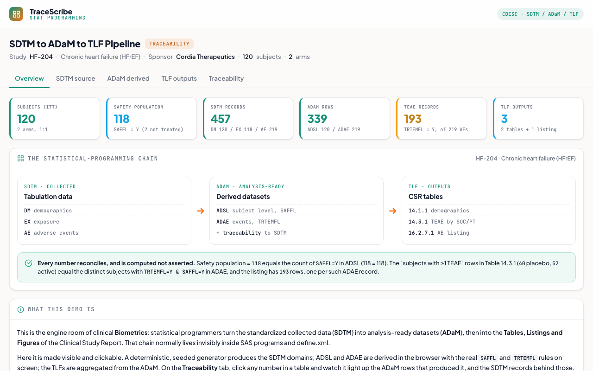

SDTM to ADaM to TLF Pipeline
The clinical Biometrics chain made visible: collected CDISC SDTM domains are derived into analysis-ready ADaM datasets, then aggregated into the Tables and Listings of a Clinical Study Report, with click-through traceability from any output number back to its source record.
What it does
Recreates the daily work of a statistical programmer. A deterministic, seeded generator produces the collected SDTM domains (DM, EX, AE) for a synthetic heart-failure trial; the demo derives the ADaM analysis datasets (ADSL, ADAE) in the browser with the real population and treatment-emergence logic shown on screen; and it aggregates those into the standard CSR outputs, a demographics table, a treatment-emergent adverse-event table by SOC and PT, and a subject-level AE listing. Every count is computed from the ADaM, so the numbers reconcile and each one traces back to source.
How it works
- SDTM source: DM, EX, and AE domains with real CDISC variable names (
USUBJID,ARMCD,RFSTDTC,EXDOSE,AEDECOD/AESOC) and controlled terminology, browsable by domain. This is the input; nothing here is derived. - ADaM derivation: ADSL (one row per subject) with
SAFFLkeyed on the presence of an EX record, so placebo (dose 0) stays in the safety population and two never-dosed subjects fall out; ADAE (one row per AE) withTRTEMFL = ASTDT >= TRTSDT, a missing start date yielding N rather than a coerced pre-dose date. The derivation rules are shown, not hidden. - TLF outputs: Table 14.1.1 Demographics and Baseline Characteristics (by planned treatment), Table 14.3.1 Treatment-Emergent AEs by SOC and PT (by actual treatment, distinct subjects, ordered by active-arm frequency), and Listing 16.2.7.1, all computed from the ADaM.
- Traceability: the centerpiece. Click any value in a table and it lights up the ADaM rows that produced it, then the SDTM source records behind those, with the derivation printed. A subject picker runs it in reverse: pick a person and watch their source records flow forward into the ADaM rows and the table cells they land in.
- Reconciliation: the safety-population N equals the count of
SAFFL=Yin ADSL; the "subjects with at least one TEAE" counts equal the distinctTRTEMFL=Y & SAFFL=Ysubjects in ADAE; the listing has one row per such record. Stated on the overview and true by construction.
A from-scratch recreation grounded in CDISC practice (real SDTM/ADaM variable names and controlled terminology, the standard SAFFL/TRTEMFL derivation conventions, demographics by planned and AEs by actual treatment). The data is synthetic and seeded; the derivations and table counts are computed in the browser, so every number reconciles and traces back to its source record. No real subjects, file://-safe, no network.

Static preview - click to open the live, interactive demo